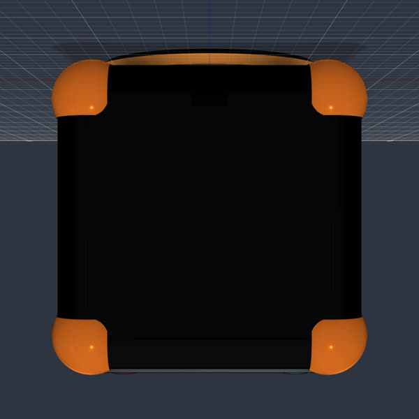
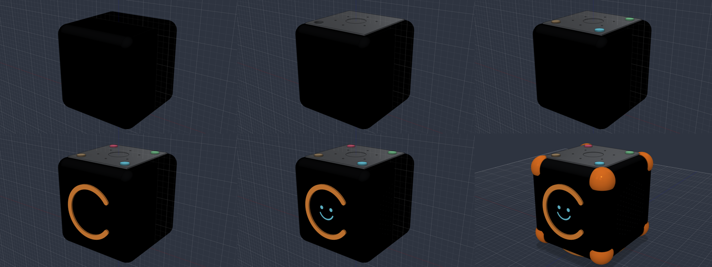

The C-Cube is a palm-sized desktop AI assistant: you can talk to it, it's always in a good mood, and the glowing C and the smiling face on its little display show what it's up to. And if you're having a bad day, you can even throw it.
I made all of it – from the idea through the 3D model and the video to this website – together with an artificial intelligence, in a few days.
Drag the cube to rotate it · its eyes follow your mouse 👀
The video
2:56 about the C-Cube: how it wakes up, what it can do, and how it was made. The video was made from code too – the 3D scene, the music and the sound effects. The narration is spoken by a local AI voice model (XTTS-v2).
Bonus: a “Japanese commercial” 🇯🇵
31 seconds in the style of the genre: rapid cuts, sunburst backgrounds, giant captions, taiko drums and “PRICELESS!”. Japanese narration (local AI voice) with English subtitles – the music and every sound effect were made from code.
What can it do?
Three groups: it entertains, it helps, it looks out for you.
🎉 It entertains
Party mode – to the music, the C and the RGB light ring underneath flash to the beat.
Cat mode 🐱 – a cat face with ears and whiskers; pet it and it purrs, with a gentle rumble you can feel under your hand.
Andor, the dad-joke button 🌳 – a wood-clad button that only tells dad jokes. Ba-dum-tss!
The peeking cube – sometimes it secretly looks at you. If you look back, it quickly looks away.
Stress-ball mode – you can throw it! The orange rubber corners let it take it, and afterwards it's a little dizzy.
Shake to Decide – ask a yes–no question, shake it, and the display shows YES or NO.
🤝 It helps
Voice-based AI assistant – Q&A, reminders, timers, translation, weather.
Do-not-disturb mode – quiet and dark; for something important it just gives a gentle buzz.
App, Bluetooth, speakerphone – your phone calls through the cube.
It cheers you up – the camera notices when you're tired or sad and tries to lift your mood.
Power-on ritual – “Welcome back, Captain! I haven't seen you for 14 hours…”
🔒 It looks out for you
Flip it over for silence – upside down, the microphones and the camera switch off too.
On-device image processing – the camera image never goes to the cloud.
Indicator light – always shows when the camera is active.
Pick a personality – or build your own
☀️Sunny„Good morning, sunshine!”
🧘Chill„Breathe in… the emails can wait.”
🔥Hype„LET'S GOOOO!”
😏Sarcastic„Oh great. Monday.”
💼Pro„You have three meetings today.”
✨Customsliders in the app: humor, energy, sarcasm…
🎮 Try it right here
Switch it on, press its buttons, throw it, or control it from the phone app. It makes sound too.
Made in Autodesk Fusion 360 – but not drawn with a mouse: the AI wrote a Python script that builds the model step by step. The first, 51-step concept grew into a manufacturable model of about 50 parts, with collision and assembly checks.
Housing
9 × 9 × 9 cm, SLS-printed PA12, 9 mm fillets, matte graphite; split in two at the bottom (the inner sled slides in from below)
Front
Ø 33 mm round LCD display, surrounded by a glowing RGB “C”
Camera
in the opening of the C, with a privacy indicator light
Top
72 × 72 mm anodized aluminum plate, 2 microphones, Ø18 mm touch surface, 4 programmable buttons (one of them wooden: Andor)
Sides
stereo speaker grilles
Back
USB-C charging connector
Corners
8 orange rubber “bumpers” – that's why it can be thrown
Bottom
RGB light ring casting light onto the desk, rubber foot
Inside
Raspberry Pi Zero 2 W (Wi-Fi + Bluetooth), Voice Bonnet (2 microphones, stereo audio), 18650 battery, XIAO RP2040, motion sensor, vibration motor – all off-the-shelf modules
Fusion – isometricFront: display and CTop: buttons, microphones

Back: USB-C

How it builds up while the script runs (the AI stepped through the Fusion timeline and saved an image of every step)
How was it made?
The point of the challenge wasn't only the result, but how I learn something new with the help of an AI. My tool was Claude Code.
1 · The idea
“got an assignment, need some help with it … got any good ideas?”
Out of four topic suggestions the C-Cube won: it fits the AI theme, and its shape is simple enough.
2 · Concept and brainstorming
“maybe you have some more ideas … what if it had a little LCD display …”
Joint brainstorming: I brought the jokes (a throwable stress ball, a dad-joke button, peeking, a camera), and the AI developed them into working features.
3 · 3D model from code, checked via MCP
“isnt there an mcp for fusion360 either? look it up properly pls”
The AI wrote a Fusion 360 Python script that builds the whole model. Through Fusion's official MCP server it ran the script itself, took pictures of the result, and found its own mistakes.
4 · A cube you can manufacture and assemble
“make it easy to assemble … Treat these like gospel, like a standard.”
The 80 mm cube became 90 mm: an inner sled, off-the-shelf modules (Raspberry Pi Zero 2 W), an SLS-printed housing, an anodized aluminum top plate, M2.5 screws everywhere. The AI checked measurable rules (at least 3 mm of clearance everywhere) and produced the cutting DXFs, the assembly guide and the market study.
5 · The video – also from code
“ok lets goo, generate the video”
An animated three.js scene with a live face and an exploded view, music and sound effects synthesized from code, stitched together with ffmpeg.
6 · One AI as the other's ears
“sometimes theres these weird sounds in it, like AAAAAAAA”
The narration is spoken by local AI voice models (F5-TTS, then XTTS-v2) on the computer's graphics card. Since the AI can't hear, a speech recognizer (Whisper) listens back to the candidates and picks the most accurate one. From these lessons the AI wrote itself a skill.
7 · Simulator and phone app
“could you maybe write a program for it? that controls the c cube”
A browser-based cube with a live face, buttons, movements, 25 dad jokes and a control app. Every command shows up in the protocol log. When run locally, you can even chat with it: the replies come from Claude.
8 · The cube's own software
“maybe could you design a program for the PCB too that handles all this?”
Python for the Raspberry Pi, CircuitPython for the XIAO RP2040, with simulated hardware and automated tests. An independent AI review still found 15 bugs, and we fixed them all.
9 · Bonus: a Japanese commercial
“the usual fast cuts, sound effects, what youd think of when you think of a viral japanese ad”
31 seconds, 11 beat-synced cuts, Japanese AI narration. Made with the same code-built video engine, in one afternoon.
10 · This website
An interactive 3D cube, videos, a simulator and the story of how it was made. Anyone can open it on GitHub Pages.
Where I got stuck – and how we got past it
“There's no Fusion MCP”
The first search was too narrow. I asked again, and the more thorough search found it: there is an official one!
Freezing Fusion
A DXF export froze Fusion twice. The first time the AI waited silently; since then it speaks up right away, and won't try the same thing a third time.
A robotic voice, then an “AAA” voice
A machine voice, a free site with a watermark, a weak Hungarian model. In the end it became English XTTS-v2 on the graphics card, curated with Whisper.
“There's no graphics card”
A mistake: the AI only checked whether the installed program could see the card. When I asked, it turned out there's an RTX 2060, and voice generation became twenty times faster with it.
An overwritten model
An old script that ran by accident overwrote the saved model. It came back from git in minutes.
Safety
I do CAM for work in this same Fusion, so before every step the AI checked that the C-Cube document was the active one. And the company logo was removed from everywhere.